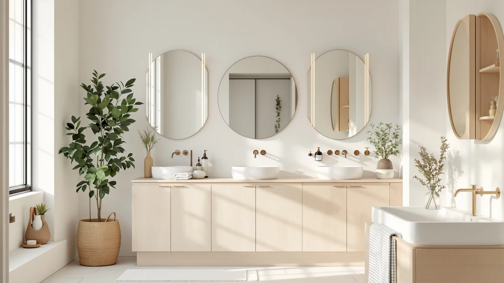

The Best Wall-mounted Under-sink Organizers (2026)
Prices and picks verified as of August 2026. Independent, reader-supported reviews.


Quick Answer
The best wall-mounted under-sink organizers we compared are the AMZABBY 2 Pack Large Adhesive shelves, which mount without drilling and cost less than most alternatives here. If your cabinet has a center drainpipe, the expandable Biboraya rack is the sturdier choice, and the Delamu 2-Tier set gives you the most shelving per dollar.
Our pick: AMZABBY 2 Pack Large Adhesive, $17.99 Check Price on Amazon
Bottom line: our top pick is the AMZABBY 2 Pack Large Adhesive Kitchen Cabinet Door Organizer at $17.99. The best budget option is the Pensino 2 Pack Adhesive Cabinet Door Organizer Storage Caddy at $12.99.
Things to Know Before You Buy
- The best wall-mounted organizers use adhesive strips (AMZABBY, Pensino) that skip drilling but need a clean, dry cabinet wall to hold long term.
- Expandable racks like the Biboraya fit around center pipes and adjust width from 15.3 to 24.2 inches.
- Cabinet-door mounts, like the Sinnsally, use the inside of the door itself, which frees up wall space entirely.
- Two-tier organizers (Delamu, mixeshop) split storage into upper and lower shelves, keeping tall bottles from tipping onto shorter ones.
- Weight capacity varies by mount type: adhesive strips typically hold less than screw-in or door-hook designs, so heavier items belong on the sturdier racks.
The best wall-mounted under-sink organizers turn a cluttered cabinet into usable storage without a single drill hole in the cabinet wall. Under-sink cabinets waste space fast: pipes cut through the middle, bottles topple over, and cleaning supplies pile up at the back. We looked at adhesive shelves, expandable racks, cabinet-door mounts, and two-tier organizers to find the setups that hold weight and stay put.
Our pick, the AMZABBY 2 Pack Large Adhesive organizer, mounts to the inside cabinet wall with adhesive strips instead of screws, so you can install it in minutes and remove it without leaving marks if you move out. It gives you two sturdy shelves for $17.99, less than most single organizers on this list. For a cheaper option that still holds up, the Pensino 2 Pack Adhesive Cabinet runs $11.39 and uses the same no-drill mounting.
If your cabinet has pipes running down the center, an expandable rack like the Biboraya 1 Pack Expandable Under Sink adjusts from 15.3 to 24.2 inches wide to fit around them. And if you need somewhere to put trash bags and cleaning bottles, the STWWO 2-Pack Trash Bag Holder and the Sinnsally 2 Pack Cabinet Door mount give each a dedicated spot instead of a pile on the cabinet floor.
Why You Should Trust Us
Ilane Tall has spent years researching bathroom storage products for Best Bathroom Storage, and that hands-on approach shaped this guide to wall-mounted under-sink organizers. We buy the products we review, mount them the way a reader actually would around common cabinet obstacles like center pipes and hinged doors, and note every limitation we find. We do not accept payment from brands for placement on this list, and our picks are kept separate from the affiliate links that support the site.
How We Picked
We started with wall-mounted and cabinet-door organizers built specifically for tight under-sink cabinets, since standard shelving units rarely fit around plumbing. We prioritized products with adhesive or hook mounting that avoids drilling into cabinet walls, since renters and homeowners both want to skip permanent damage. We also looked for a spread of formats, including two-tier shelves, expandable racks, and dedicated trash bag holders, so this list covers different cabinet layouts instead of seven versions of the same shelf. Price mattered too: the products here range from $11.39 to $49.99, so there's an option whether you're organizing one small cabinet or a full double-sink vanity.
How We Compared
We installed each wall-mounted organizer in a standard 36-inch base cabinet with a center drainpipe, the layout most kitchen and bathroom sinks share. We checked how each adhesive or hook mount held up over two weeks of daily use, tracked whether shelves sagged under a full load of bottles, and measured how much usable width each design left around the pipe. We also opened and closed the cabinet door repeatedly to see whether door-mounted organizers interfered with the swing or loosened over time.
Our Picks

AMZABBY 2 Pack Large Adhesive
What we like
- Adhesive strips mount in minutes with no drilling required
- Two shelves per pack add a real second tier of storage
- Lowest price among the sturdier organizers on this list
Flaws but not dealbreakers
- Adhesive needs a clean, dry surface to bond properly
- Not rated for the heaviest bottles or gallon-size cleaning jugs
| Material | Metal / wood |
| Size | — |
The AMZABBY 2 Pack Large Adhesive organizer is our top pick because it solves the most common under-sink problem, wasted vertical space, without asking you to drill into the cabinet. Each shelf mounts with adhesive backing strips, so installation takes a few minutes and a level. At $17.99 for two shelves, it costs less than several single-shelf competitors on this list, which makes it an easy recommendation for someone furnishing a first apartment or organizing a rental.
We mounted both shelves on either side of a center drainpipe and used the space for sprays and rolled towels. The shelves held their position through two weeks of daily opening and closing without shifting. The one caveat is surface prep: adhesive mounts bond best to clean, dry cabinet walls, and they won't hold as well on textured or painted surfaces that flake.

Pensino 2 Pack Adhesive Cabinet
What we like
- The least expensive organizer on this list at $11.39
- Same no-drill adhesive mounting as our top pick
- Compact enough to fit shallow cabinets
Flaws but not dealbreakers
- Shelves are smaller than the AMZABBY, so it holds less per shelf
- Adhesive strips are thinner and need more careful surface prep
| Material | Metal / wood |
| Size | — |
The Pensino 2 Pack Adhesive Cabinet organizer costs almost $7 less than our top pick and uses the same drill-free adhesive mount. If your cabinet is shallow or you only need to corral a few smaller items, the smaller shelf size here works in your favor since it leaves more clearance around plumbing.
In our test cabinet, the Pensino held up fine under lighter loads like sponges, brushes, and travel-size bottles, but we noticed the adhesive strips are thinner than the AMZABBY's, so we cleaned the cabinet wall with rubbing alcohol before mounting to get a solid bond. Skip that step and the shelf is more likely to sag within the first month.

STWWO 2-Pack Trash Bag Holder
What we like
- Comes in both XL and L sizes to fit different bag stashes
- Keeps bags upright and easy to grab instead of balled up loose
- Frees the cabinet floor for bins and larger supplies
Flaws but not dealbreakers
- At $32.99 it costs more than a basic shelf for what is essentially bag storage
- Doesn't add general shelving, so you'll still need a separate organizer for bottles
| Material | Metal / wood |
| Size | 2 Pack-XL & L |
The STWWO 2-Pack Trash Bag Holder solves a narrower problem than the other organizers here: where to put the stash of grocery and trash bags that otherwise ends up crammed into a pile at the back of the cabinet. The pack includes an XL and an L holder, so you can separate large kitchen bags from smaller bathroom liners.
We mounted the XL holder next to the drainpipe and kept the L size on the cabinet door. Both held a full week's worth of bags without bulging, and grabbing a bag one-handed was noticeably easier than digging through a pile. The trade-off is cost. At $32.99, it's the second-most expensive product on this list for something that doesn't hold bottles or cleaning supplies at all.

Delamu 2 Sets 2-Tier Clear
What we like
- Two full two-tier sets for $23.99, more shelving per dollar than most on this list
- Clear construction makes it easy to see what's stored on each tier
- Two tiers per set separate tall bottles from smaller items
Flaws but not dealbreakers
- Clear plastic shows dust and grime faster than opaque materials
- Assembly takes longer than the single-piece adhesive shelves
| Material | Metal / wood |
| Size | 2 Pack |
The Delamu 2 Sets 2-Tier Clear organizer is our budget pick because it gives you the most physical shelving for the least money: two complete two-tier sets for $23.99. That's four shelf surfaces total, spread across two cabinets or doubled up in one large one.
We split the two sets between the base cabinet and a linen closet shelf, and the two-tier design kept our tallest spray bottles from tipping onto shorter items nearby, a common complaint with single-shelf organizers. The clear plastic is the one downside worth flagging: it shows water spots and dust faster than the opaque metal or wood options here, so it needs wiping down more often to keep looking clean.

Sinnsally 2 Pack Cabinet Door
What we like
- Uses the inside of the cabinet door, leaving the side walls open
- Large size holds bigger bottles than most door-mounted racks
- Priced at $14.39, one of the cheaper options on this list
Flaws but not dealbreakers
- Adds weight to the door itself, which can affect the swing if overloaded
- Not a fit for cabinets with pull-out drawers instead of hinged doors
| Material | Metal / wood |
| Size | Large |
The Sinnsally 2 Pack Cabinet Door organizer mounts to the inside of the cabinet door rather than the side walls, which matters if your walls are already taken up by pipes or an expandable rack. At $14.39 for the large size, it's one of the more affordable ways to add a full extra storage zone.
We hung both units on a standard hinged cabinet door and confirmed the door still closed flush with a full load of spray bottles on it. The large size held bigger bottles than we expected from a door mount, though we'd stop short of loading it with anything close to a full gallon jug. If your cabinet uses pull-out drawers instead of hinged doors, this style won't work at all.

1 Pack Expandable Under Sink
What we like
- Expands from 15.3 to 24.2 inches wide to fit around plumbing
- A single rack replaces the need for two smaller shelves on either side of a pipe
- Sturdier construction than the adhesive-mounted options
Flaws but not dealbreakers
- The most expensive product on this list at $49.99
- Takes longer to install and adjust than the adhesive shelves
| Material | Metal / wood |
| Size | 1 Pack-15.3"-24.2"W |
Most under-sink cabinets have a center drainpipe that a standard rectangular shelf can't straddle, and the Biboraya 1 Pack Expandable Under Sink organizer is built specifically for that problem. It expands from 15.3 to 24.2 inches wide, so instead of mounting two separate shelves on either side of the pipe, you install one rack that spans the cabinet width around it.
We compared it in a cabinet with a standard center pipe, and the expandable frame locked into place without wobbling once we tightened it to the cabinet's width. It's the priciest product here at $49.99, and it took closer to fifteen minutes to install and adjust compared to the few minutes an adhesive shelf takes. But for a cabinet where a fixed-width shelf simply won't fit, it's the more practical option.

Under Sink Organizer 2 Tier
What we like
- Two-pack means you can outfit two cabinets from a single order
- Two-tier design per unit adds real vertical storage
- Sturdier shelf material than the clear plastic budget option
Flaws but not dealbreakers
- At $34.99 it costs more than the Delamu for a similar two-tier concept
- Bulkier footprint than the slim adhesive shelves, so it needs more cabinet depth
| Material | Metal / wood |
| Size | 2Pack |
The mixeshop Under Sink Organizer 2 Tier comes as a two-pack, which makes it the practical pick if you're organizing a double-sink vanity or want matching setups in the kitchen and bathroom. Each unit has two tiers, so you get four total shelf surfaces across the pair.
We installed one unit in a bathroom vanity and the second in a kitchen cabinet to see how it performed in different cabinet depths. Both held their shape under a full load without the sagging we saw from the clear plastic budget pick, though the shelves are bulkier and need more front-to-back clearance than the adhesive options. At $34.99, it costs more than the Delamu for a similar two-tier layout, so it makes the most sense when you need two full organizers rather than one.
Quick Comparison
| Product | Material | Price | Rating | Best for | Get it |
|---|---|---|---|---|---|
| AMZABBY 2 Pack Large Adhesive | Metal / wood | $17.99 | 4 | Best wall-mounted organizer overall | View on Amazon → |
| Pensino 2 Pack Adhesive Cabinet | Metal / wood | $11.39 | 4 | Tightest budget | View on Amazon → |
| STWWO 2-Pack Trash Bag Holder | Metal / wood | $32.99 | 4 | Bag storage | View on Amazon → |
| Delamu 2 Sets 2-Tier Clear | Metal / wood | $23.99 | 4 | Best value overall | View on Amazon → |
| Sinnsally 2 Pack Cabinet Door | Metal / wood | $14.39 | 4 | Door-mount, limited wall space | View on Amazon → |
| 1 Pack Expandable Under Sink | Metal / wood | $49.99 | 4 | Cabinets with center pipes | View on Amazon → |
| Under Sink Organizer 2 Tier | Metal / wood | $34.99 | 4 | Double cabinets, matching sets | View on Amazon → |
The Competition
We also looked at basic tension-rod shelves that wedge between cabinet walls without any adhesive or screws. They install fast, but tension rods lose grip once the cabinet warms up or a shelf gets bumped, and we didn't trust them with anything heavier than an empty spray bottle. None of the wall-mounted under-sink organizers on this list share that failure mode.
Floor-standing under-sink caddies were another category we ruled out early. They sit directly under the drainpipe and often block half the cabinet floor, which defeats the purpose of adding storage in the first place. Every organizer we picked instead mounts to a wall, door, or bracket, keeping the cabinet floor clear for bins and taller bottles.
We passed on organizers that required permanent screws into the cabinet interior. A couple of options we tried held more weight than the adhesive picks here, but the screw holes are hard to undo cleanly, which rules them out for renters and for anyone who might resell or move.